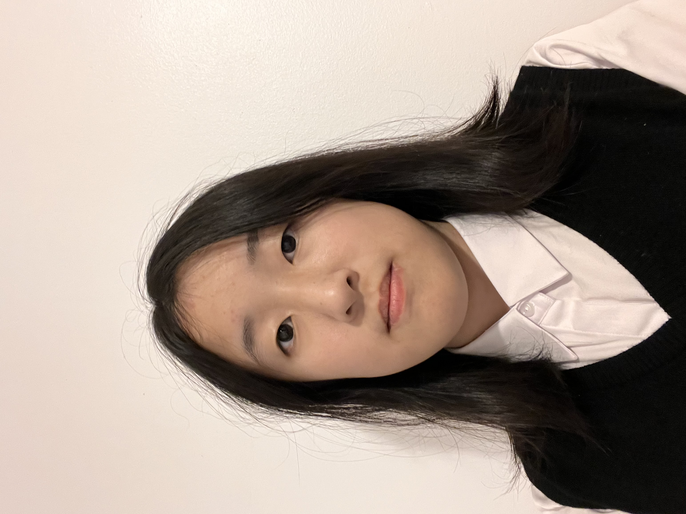

About Me

Hello, my name is Daisy Li, and I'm a Grade 10 student at William Lyon Mackenzie C.I.
My main interests are playing musical instruments and computer science.
I have been playing the piano for 10 years, the cello for 2 years (give or take), and the flute for 1 year. I very much enjoy being in school musical ensembles (String Ensemble and Wind Symphony).
I would give all my earthly possessions to the pursuit of music if I could, but that isn't a stable career path.
In the computer science realm, I know a few languages, mainly Python and Java. I am learning C++ for competitive programming purposes, and I know a bit of HTML/CSS.
I'm working on getting better at competitive programming (hoping for honour roll on CCC). I also like game development, and I have an unfinished Unity game project in the works.
Outside of class, I mainly do music, participating in the school music ensembles. However, I am also in MCPT as a learning executive, and I do CyberPatriot during the competition season.
I volunteer outside of school with a non-profit organization called CodingIsFun, which aims to teach youth basic programming, free of charge. I am the organization's current president.
I also tutor a child in music for money.